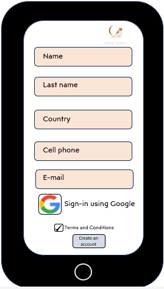

Agogo System: A beginner's Guide
Getting Started
Download Agogo System
Download the application from:
- Google Play Store: Supported from Android 10 onwards.
- App Store: Supported from iOS 10 onwards.
- Agogo System web: Supported on Chrome and Edge web browsers via Visit Agogo System
Create an account
-
Enter your contact details in the relevant fields:
- Name
- Last Name
- Date of Birth (DD/MM/YYYY)
- Country
- Telephone
-
Read and accept the terms & conditions.
-
Click on "Create an Account".

-
After setting up your account, you'll gain access to the homepage.
Register your pets and create a profile
- Select "Profiles".
- Insert your pet's name and age.
- Select the age from the drop-down menu.
- Press the round button to select your pet species. The available options are:
- Cat
- Dog
- Guinea Pig
- Fish
- Other
-
Upload your pet's picture from your gallery. This is optional.
Customize your pet's profile
Edit your pet's information any time by clicking on your pet's profile.
Profile picture 📷
Select the "Camera" icon or the current profile picture and choose the new picture from your gallery.Pet name 🐈
Select the name and type your updates.Age & birthday 🎂
You can edit the age manually or insert your pet's birth date using the calendar that pops up. If you choose the exact date, you'll receive reminders as your pet's birthday approaches 🎁.Vaccination record 🧪
Manage your pet's vaccination schedule by entering the vaccine name and the date it was administered on your pet. 📆 This information synchronizes with the app's calendar, providing you with timely reminders as the next vaccination date approaches. 👉 You will also receive customized recommendations based on your pet's type and age, ensuring their health and well-being through personalized guidance and vaccination planning.
Food supply and diet management 🍖
Whether your pet feeds on dry or canned food or follows a special diet regimen (BARF, TMR, weight control, etc.), keeping track of their daily portion sizes, feeding times, food supply, and other dietary details is crucial. You will be able to log and set reminders about:- Portion sizes
- Meal times
- Food supply
- Food and water bowls cleaning
Microchip information💾
If your pet has a microchip implant, it's crucial to maintain an updated record of the information associated with it. Set regular reminders to verify the microchip registration details and receive updates about the registry authority latest regulations. 🟡 Make sure your contact information is accurate and up to date to enhance the chances of reuniting with your pet in case they ever get lost.Medical history 📝
Log your pet's medical history by recording the details from each vet visit. You can add dates, diagnoses, prescribed medications, and other relevant notes to maintain an organized medical record for your pet's health.Veterinary information 👩‍⚕️
Include your vet's contact information such as phone number, address, email, and their contact hours.Don't forget to add the contact information for nearby emergency clinics for quick access during urgent situations.
Calendar 📆
Open the calendar to set or edit important dates, reminders, and appointments. 👉 You can learn more about this feature in the section Organize your Calentar🱠Keep in mind that doing this from your pet's profile will automatically update the calendar information related to that pet.
Organize your calendar
-
Select the specific date that you wish to update. You will be able to record single events or establish a specific frequency to:
- Set reminders, such as flea and tick control or vaccination dates.
- Insert meal hours and medicine alarms.
- Add your pet's birthday.
- Register upcoming or past vet appointments.
-
Select the pet related to that event.
- Confirm the changes.
Google Calendar
If you log in using your Google account, you can enable synchronization with Google Calendar.